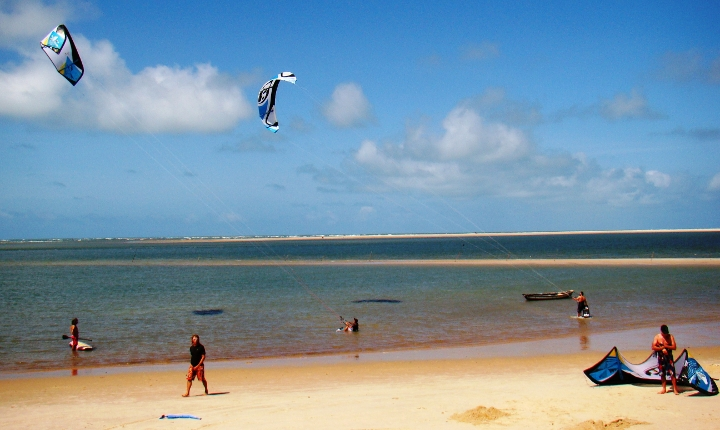

Atins Kite School
Atins Kiteboarding é integrada por uma pequena comunidade de riders apaixonados. Nossa equipe de instrutores qualificados e entusiastas irá ensinar-lhe todo o necessário para que você acabe velejando da maneira mais segura e rápida.
Atins é a melhor opção para principiantes interessados em dar os primeiros passos nesse esporte, graças a seus ventos sempre constantes, enormes lagoas de águas temperadas e pouco profundas, e suas inabitadas praias.
A Escola de Kite está convenientemente situada na rua principal de Atins, com acesso direto à praia e dentro de uma magnífica galeria de coqueiros. Dentre os serviços destinados ao esporte, a Atins Kiteboarding oferece aulas individuais e grupais em português, inglês e espanhol; aluguel de equipamentos; instalações para guardar, limpar e secar os equipamentos; serviços de kite caddy; e grandes espaços abertos para relaxar entre seções.
Se você precisar alugar equipamentos, é recomendável avisar com antecedência.
Downwind e Kite Tours
Temos à disposição várias opções de downwind e tours guiados, dependendo do nível de navegação e preferências de estilo. Cada alternativa oferece transporte terrestre para o regresso e o apoio de um barco de resgate, com a possibilidade de que os acompanhantes da viagem que não velejem possam também participar da aventura viajando em algum deles.
Os velejadores principiantes e intermediários fazem os downwinds ao longo duma grande lagoa de água plana, e os mais experientes podem se aventurar no mar aberto, onde é possível achar ondas de 1,5 – 2 metros, dependendo da maré. Outras opções incluem downwinds através das águas calmas do Rio Preguiças, ou seções de kite em lagoas do Parque dos Lençóis Maranhenses.